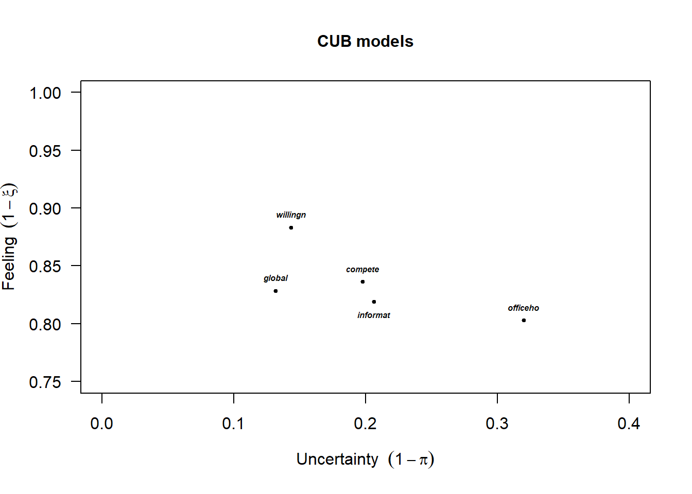
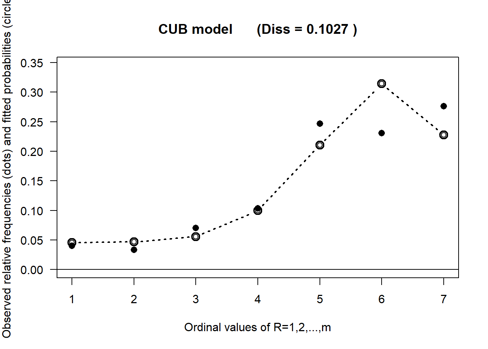
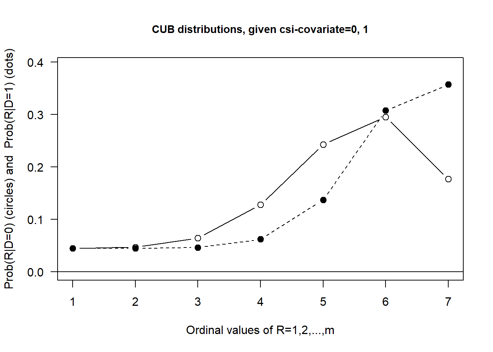
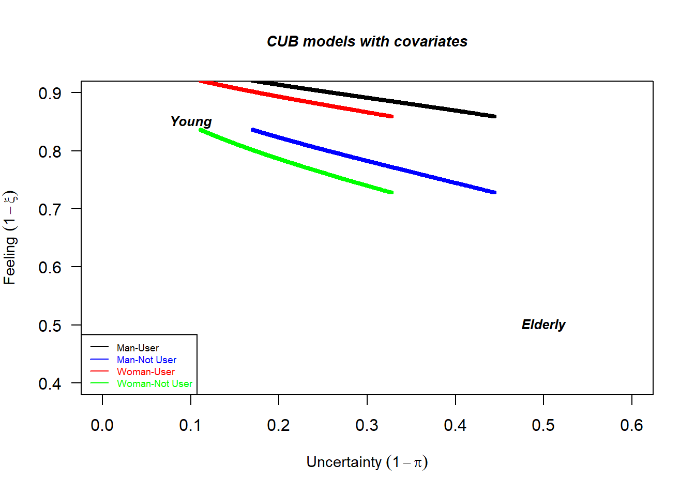
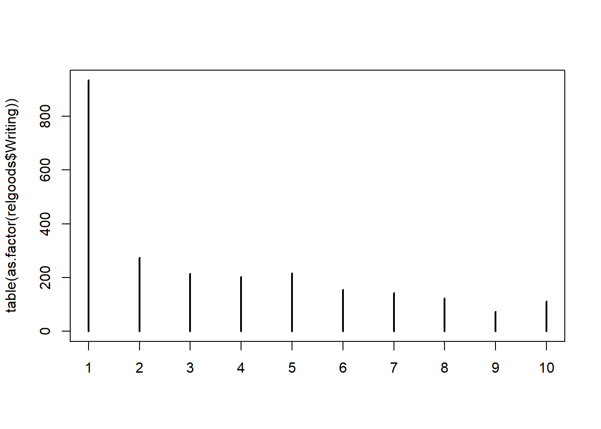

While powerful and widely used, Ordered logit models operate under specific assumptions:
Proportional Odds Assumption: This assumption can be restrictive and, if violated, can lead to misleading conclusions.
Latent Variable Interpretation: While mathematically convenient, the interpretation of the latent variable might not always align perfectly with the psychological process of how an individual actually chooses an ordered category. The continuous latent variable often represents an underlying “utility” or “propensity,” but it doesn’t explicitly account for aspects like uncertainty or indecision in the response process.
These limitations highlight a need for alternative modeling frameworks that can capture the nuanced complexities inherent in how individuals respond to ordinal scales.
There is a clear and compelling need for specialized statistical models designed to capture the unique characteristics of ordinal data and, importantly, to reflect the underlying cognitive and psychological processes through which individuals select a particular ordered category. This is where CUB models (Combination of a Uniform and a shifted Binomial random variable) come into play.
CUB models, primarily developed by Domenico Piccolo and collaborators starting in the early 2000s, offer a distinct and innovative approach to modeling ordinal data. They stand apart from traditional methods by explicitly incorporating psychological interpretations into their statistical structure.
At their core, CUB models are mixture models specifically tailored for ordinal data. The fundamental idea is that a respondent’s observed rating is not solely a direct and deterministic mapping of their true “feeling” or “utility.” Instead, it is also significantly affected by an element of “uncertainty” or “indecision” that can influence the final choice. This acknowledgment of psychological complexity in the response process is what makes CUB models particularly insightful for rating data.
The Psychological Reasons Behind the CUB Model
The innovation of the CUB model lies in its attempt to statistically represent two fundamental psychological components that influence a respondent’s choice on an ordinal scale. The model posits that an observed rating \(R\) is a probabilistic outcome of a decision process that weighs two components.
1. Feeling (or Attraction/Preference)
This component represents the conscious, rational, and deliberative aspect of the decision-making process. It reflects the respondent’s genuine evaluation, opinion, or perception regarding the item being rated. The “feeling” directs the respondent towards a specific category on the scale that best aligns with their internal assessment. This is the component that captures the respondent’s true position or stance on the matter at hand.
Depending on the specific context of the rating, “feeling” can be interpreted as:
Agreement/Disagreement: How much a person agrees or disagrees with a statement.
Satisfaction/Dissatisfaction: The level of contentment or discontent with a product, service, or experience.
Liking/Disliking: The degree of preference or aversion towards an item.
Perceived quality, importance, risk, etc.: The subjective assessment of various attributes.
In essence, the feeling component drives the respondent towards a particular region of the ordinal scale, reflecting their underlying preference or “attraction” to certain categories.
2. Uncertainty (or Indecision/Fuzziness)
This component captures the hesitation, randomness, or lack of decisiveness that can accompany the choice process. It acknowledges a crucial psychological reality: respondents may not always have a perfectly clear and precise mapping of their internal feeling onto the provided scale categories. This can introduce a degree of randomness or “noise” into the selection process.
Sources of this uncertainty can be varied and include:
Lack of Information or Knowledge: The respondent might not have sufficient information to form a strong opinion about the item being rated.
Ambiguity: The question wording or the definition of the scale categories might be unclear, leading to confusion.
Personal Tendencies: Some individuals may inherently be more indecisive or tend to use certain parts of a scale (e.g., sticking to the middle categories).
Cognitive Effort/Satisficing: In long surveys or under time pressure, respondents might engage in “satisficing” behavior. Instead of expending full mental energy to find the optimal category, they might pick a plausible but not necessarily precise one to save cognitive effort.
Time Pressure or Fatigue: Being rushed or tired can reduce the ability to make a precise decision.
Emotional State or Mood: A respondent’s transient emotional state can also introduce variability into their choices.
The uncertainty component effectively describes the probability that the respondent’s choice is influenced by random factors rather than a specific preference.
The CUB Model: Statistical Formulation
The basic CUB model, designed for m ordered categories (typically \(r=1,2,\dots,m\)), is a finite mixture of two discrete probability distributions:
A shifted Binomial distribution to model the feeling (or attraction/preference) component.
A discrete Uniform distribution to model the uncertainty (or indecision/fuzziness) component.
The Probability Mass Function (PMF) for an observed rating \(R=r\) is given by:
\[
P(R = r \mid \pi,\xi) = \pi B(r \mid\xi) + (1-\pi)U(r)
\] where the elements of the mixture are:
\(m\): This is the number of ordered categories on the scale. For instance, if a scale ranges from “1 = Strongly Disagree” to “5 = Strongly Agree,” then \(m=5\).
\(r\): This denotes the selected category by a respondent, where \(r\in \{ 1,2,…,m\}\).
\(\pi \in (0,1]\), acts as a mixture weight. \(\pi\) represents the probability that the observed choice is driven by the feeling component (i.e., the shifted Binomial distribution).
Consequently, \((1−\pi)\) is called Uncertainty parameter and represents the probability that the observed choice is driven by the uncertainty component (i.e., the discrete Uniform distribution). A higher value of \((1−\pi)\) means greater indecision or randomness in the response, indicating that the uniform component has a stronger influence.
\(\xi \in [0,1]\), is directly related to the shifted Binomial distribution and determines the location of the “feeling”.
More intuitively, \((1−\xi)\) is often considered the direct measure of “feeling”, indeed it is called Feeling parameter.
If \((1−\xi)\) is high (e.g., close to 1, meaning \(\xi\) is close to 0), there’s a strong underlying feeling towards the higher end of the scale.
If \((1−\xi)\) is low (e.g., close to 0, meaning \(\xi\) is close to 1), there’s a strong underlying feeling towards the lower end of the scale.
If \((1−\xi) = 0.5\) (meaning \(\xi=0.5\)), the feeling component is neutral or centered, implying a symmetric preference if not for the influence of uncertainty.
\(U(r)\): This is the probability of choosing category \(r\) according to a discrete Uniform distribution.
For any category \(r\in\{1,2,…,m\}\), \(U(r)= \frac{1}{m}\).
This component represents complete randomness or a lack of specific preference among the \(m\) categories. If a respondent is entirely uncertain or indecisive, their response is essentially a random pick from the available options.
\(B(r∣\xi)\): This is the probability of choosing category \(r\) according to a shifted Binomial distribution.
Specifically, this refers to \(P(X=r−1)\) where \(X\sim Bin(m−1,1−\xi)\). The “shifted” aspect arises because the rating scale typically starts from 1, while a standard Binomial distribution’s trials start from 0. Thus, to model a choice of \(r\) on a scale \(1,…,m\), we consider \(r−1\) successes out of \(m−1\) trials.
So, the PMF is:
This component models the feeling towards a particular category, allowing for various shapes (unimodal, skewed left/right, or even U-shaped if \((1−\xi)\) is extremely close to 0 or 1, though the latter is less common in direct “feeling” interpretation). It captures where the respondent’s underlying preference lies on the scale.
Finally, the CUB model can be written as: \[
P(R = r \mid \pi,\xi) = \pi \binom{m-1}{r-1}(1-\xi)^{r-1}\xi^{m-r} + (1-\pi) \frac{1}{m}
\]
Interpretation of Parameters
The feeling \((1-\xi)\) and the uncertainty \((1-\pi)\) parameters are not merely statistical quantities; they have direct psychological meanings related to the respondent’s decision process.
The Uncertainty Parameter
It directly quantifies the level of uncertainty or indecision in the respondent’s choice.
If \((1-\pi = 0)\) (i.e., \(\pi = 1\)) it means that the observed choice is entirely determined by the feeling, modeled by the binomial component. There is no uncertainty. The distribution of responses will reflect the shape of the Binomial.
If \((1−\pi)=1\) (i.e., \(\pi=0\)) it means that the observed choice is entirely determined by “uncertainty” (Uniform component). The respondent’s feeling plays no role. The distribution of responses will be perfectly flat, meaning each category is chosen with equal probability.
Values between 0 and 1 indicate a mix of the two components. A higher value of \((1−\pi)\) effectively “flattens” the observed distribution of responses towards a uniform shape, as the random component gains more influence.
The Feeling Parameter
The quantity \((1−\xi)\) measures the underlying “feeling”, “preference”, or “attraction” of the respondent. It dictates the skewness and location of the Binomial component.
If \((1−\xi)\) is high (close to 1, so \(\xi\) is close to 0), it means that there’s a strong attraction towards higher-valued categories. The Binomial component will be skewed to the right, with its mode (most frequent value) located at or near the maximum category \(m\).
If \((1−\xi)\) is low (close to 0, so \(\xi\) is close to 1) it means that there’s a strong attraction towards lower-valued categories. The Binomial component will be skewed to the left, with its mode located at or near the minimum category 1.
If \((1−\xi)=0.5\) (so \(\xi=0.5\)), the Binomial component is symmetric around the center of the scale, indicating a neutral or balanced feeling.
Probability distribution functions of the CUB model, for \(m = 7\) and 9 combinations of feeling and uncertainty.
Model identifiability and Estimation
The CUB model is identifiable (i.e., different sets of parameter values lead to different probability distributions for the observed data) if the number of categories \(m > 3\).
The parameters \((\pi, \xi)\) of the CUB model are typically estimated using the Maximum Likelihood Estimation (MLE) method. MLE search for the parameter values that maximize the likelihood of observing the given data.
Since the CUB model is a mixture model, direct maximization of this log-likelihood function can be complex due to its non-linear nature. Therefore, the Expectation-Maximization (EM) algorithm is a common and robust iterative method for finding the MLEs.
Assessing the Goodness of Fit
A particularly common and intuitive measure for assessing how well a CUB model fits the observed data is the Dissimilarity (\(Diss\)) Index. It quantifies the absolute difference between the observed and fitted proportions for each category. The \(Diss\) index is defined as follows:
\[
Diss = \frac{1}{2}\sum_{r = 1}^{m} \mid f_r - p_r(\hat{\boldsymbol{\theta}})\mid
\] where \(f_r\) are the observed relative frequencies and \(p_r(\hat{\boldsymbol{\theta}})\) are the estimated probabilities for the response categories.
Values of \(Diss\) closer to 0 indicate a better fit, with a perfect fit yielding \(Diss = 0\).
The maximum value of \(Diss\) is 1 when there is no overlap between observed and fitted distributions.
The Dissimilarity Index is popular because it provides a direct and easily interpretable measure of the overall discrepancy between the observed data distribution and the distribution predicted by the CUB model. In other words, it measures the proportion of responses to be changed to achieve a perfect fit.
It is less sensitive to low expected frequencies than the Pearson Chi-squared test and gives a clear indication of prediction accuracy.
Parameter Space Visualization
CUB models offer a highly intuitive way to visualize the joint interpretation of their parameters: the parameter space visualization. This is typically represented on a unit square where:
The x-axis represents \((1−\pi)\), the uncertainty level. The y-axis represents \((1−\xi)\), the feeling or attraction level. This “CUB plot” is incredibly helpful for comparing different datasets, subgroups, or even changes within a single group over time. Key regions of this plot offer immediate insights:
Bottom-left corner (\((1−\pi)\approx0,(1−\xi)\approx0\)): This indicates very low uncertainty (respondents are very certain in their choices) and a strong feeling towards low scores (e.g., strong disagreement, high dissatisfaction).
Top-left corner (\((1−\pi)\approx0,(1−\xi)\approx1\)): This signifies very low uncertainty and a strong feeling towards high scores (e.g., strong agreement, high satisfaction).
Right side (\((1−\pi)\approx1\)): This region represents very high uncertainty. In this scenario, the feeling component becomes less influential, and responses tend to be closer to a uniform distribution, indicating a significant degree of randomness in the choices.
This graphical representation provides a powerful diagnostic tool for understanding the underlying psychological processes at play in rating data.
Graphical representation of the parameter space of the CUB model
Extensions of the CUB Model: Incorporating Covariates
The basic CUB model, as discussed in Chapter 2, provides a powerful framework for understanding the underlying feeling and uncertainty in rating data. However, the basic formulation assumes a homogeneity in the population, meaning that the parameters are constant for all individuals. While useful for initial descriptive analysis, this assumption often oversimplifies the complex reality of human responses.
In real-world applications, it is almost always more realistic to assume that the psychological components driving responses (the feeling and uncertainty components) vary across different individuals or groups. These variations are often systematically related to observable characteristics of the respondents or the context in which the ratings are collected.
The introduction of covariates into the CUB model allows us to move beyond a simple description of the overall population’s feeling and uncertainty, enabling a much more nuanced and insightful analysis. Specifically, introducing covariates allows us to:
Explain heterogeneity in response patterns: Instead of treating differences in responses as random noise, covariates enable us to identify systematic factors that explain why different individuals or groups exhibit different levels of feeling and uncertainty.
Understand how specific characteristics influence feeling and uncertainty: This is perhaps the most powerful advantage. We can quantify the impact of a 10-year age increase on the probability of certainty (π) or the effect of a higher education level on the tendency to rate highly (1−ξ). This moves from mere description to explanation and inference.
Statistical Formulation of CUB Model with Covariates
Formulation of CUB with Covariates In a CUB model with covariates, the core idea is that the parameters \(\pi\) and \(\xi\) are no longer fixed constants across all individuals. Instead, they are modeled as functions of a set of explanatory variables. Let \(y_i\) be a vector of covariates for subject \(i\) specifically influencing their uncertainty, and \(w_i\) be a vector of covariates for subject \(i\) influencing their feeling. These covariate vectors can be the same, overlap, or be entirely different.
To ensure that the parameters \(\pi_i\) and \(\xi_i\) remain within their valid range of \([0,1]\), a link function is employed, typically a logistic (logit) function, which is standard practice for modeling probabilities in generalized linear models.
Modeling the uncertainty
Since \(\pi_i\in [0,1]\), we model it using a logistic link. It’s often more intuitive to model \((1-\pi_i)\), which represents the probability that the choice is driven by the uniform component.
The log-odds of uncertainty are linked to the covariates \(y_i\):
\[
\text{logit}(1-\pi_i) = \log \Bigg(\frac{1-\pi_i}{\pi_i}\Bigg) = \boldsymbol{y}^{T}_i\boldsymbol{\beta}
\] where \(\boldsymbol{\beta}\) is a vector of coefficients corresponding to the covariates \(\boldsymbol{y}_i\).
From this, we can derive the direct relationships for \((1−\pi_i)\) and \(\pi_i\)
Similarly, for \(\xi_i\in [0,1]\), a logit link is applied. It’s often more insightful to directly model \((1-\xi_i)\), which represents the feeling towards higher scores on the scale.
The log-odds of feeling for higher scores are linked to the covariates \(w_i\) :
\[
\text{logit}(1-\xi_i) = \log \Bigg(\frac{1-\xi_i}{\xi_i}\Bigg) = \boldsymbol{w}^{T}_i\boldsymbol{\gamma}
\] where \(\boldsymbol{\gamma}\) is a vector of coefficients corresponding to the covariates \(\boldsymbol{w}_i\).
where \(\pi_i\) and \(\xi_i\) are determined by the covariates as defined above.
Interpretation of Covariate Effects
Interpreting the coefficients (\(\beta\) and \(\gamma\)) in a CUB model with covariates is crucial for understanding how specific characteristics influence the psychological components of rating. Remember that these coefficients operate on the log-odds scale due to the logistic link.
Coefficients\(\beta\)
These coefficients describe the impact of covariates on the log-odds of uncertainty.
A positive coefficient \(\beta_k\) implies that an increase in the \(k\)-th covariate \(y_{ik}\), holding other covariates constant, increases the log-odds of uncertainty. Therefore \((1−\pi_i)\) increases and makes the respondent’s choice more driven by the uniform component. This suggests that as \(y_{ik}\) increases, the individual is more indecisive or random in their rating.
A negative \(\beta_k\) implies that an increase in \(y_{ik}\) decreases the log-odds of uncertainty, thus decreasing \((1−\pi_i)\) and making the respondent’s choice more driven by their underlying feeling. This suggests that as \(y_{ik}\) increases, the individual becomes more certain in their rating.
Coefficients\(\gamma\)
These coefficients describe the impact of covariates \(w_i\) on the log-odds of feeling towards higher scores.
A positive \(\gamma_k\) implies that an increase in the \(k\)-th covariate \(w_{ik}\), holding other covariates constant, increases the log-odds of feeling for higher scores, thus increasing \((1-\xi_i)\). This means that as \(w_{ik}\) increases, the individual’s underlying preference shifts towards the higher end of the rating scale.
A negative \(\gamma_k\) implies that an increase in \(w_{ik}\) decreases the log-odds of feeling for higher scores, thus decreasing \((1-\xi_i)\). This means that as \(w_{ik}\) increases, the individual’s underlying preference shifts towards the lower end of the rating scale.
Important Note: CUB models with covariates are not Generalized Linear Models (GLMs) in the strict sense. While the parameters \(\pi_i\) and \(\xi_i\) are linked to covariates using GLM-like structures (specifically, logistic regressions), the response variable itself (the mixture of Binomial and Uniform distributions) does not belong to the exponential family.
This case study demonstrates the application of CUB (Combination of Uniform and a shifted Binomial) models for analyzing ordinal data, using the CUB package in R. The univer dataset comes from a survey administered to students at the University of Naples Federico II to evaluate orientation services.
Dataset Description
The univer dataset from 2002 contains 2,179 observations, including responses to evaluation questions on a 7-point Likert scale (from 1 = “very unsatisfied” to 7 = “extremely satisfied”). The ordinal variables of interest are:
informat: Satisfaction level with the information received.
willingn: Satisfaction level with the staff’s willingness.
officeho: Satisfaction level with office opening hours.
competen: Satisfaction level with staff competence.
global: Overall satisfaction level.
The dataset also includes covariates:
Faculty: A factor variable, with levels ranging from 1 to 13 indicating the coding for the different university faculties
Freqserv: A factor with levels: 0 = for not regular users, 1 = for regular users
Age: Variable indicating the age of the respondent in years
Residence: A factor with levels: 1 = city NA, 2 = district NA, 3 = others
ChangeFa: A factor with levels: 1 = changed faculty, 2 = not changed faculty
Exploratory Analysis
As a first step, it is helpful to visualize the estimated CUB models for all ordinal variables simultaneously. The multicub() function fits a CUB model to each variable and plots the estimated parameters for uncertainty (1 - \(\hat{\pi}\)) and feeling (1 - \(\hat{\xi}\)) in the parameter space. The “feeling” (1 - \(\xi\)) represents the preference for higher scores on the rating scale.
Note that multicub() is especially useful for a comparative visual analysis of rating data vectors, even with different scale lengths. It requires the variables to be stored in a list.
library(CUB)data(univer)# Select only the columns with ordinal variableslistord <- univer[, 8:12]# Assign labels for the plotlabels <-names(univer)[8:12]# Visualize CUB models for each ordinal variablemulticub(listord, labels = labels,caption ="CUB models on Univer data set", pch =19,pos =c(1, rep(3, ncol(listord) -1)), ylim =c(0.75, 1), xlim =c(0, 0.4))

From the visual analysis, it appears that the officeho item (satisfaction with opening hours) has the highest uncertainty. For this reason, the subsequent analysis will focus on this variable.
CUB Model without Covariates for officeho
First, a basic CUB model is estimated for the officeho variable without including any covariates. This serves as a baseline to understand the variable’s distribution.
## CUB model without covariates for "officeho"cub_00 <-GEM(Formula(officeho ~0|0|0), family ="cub", data = univer)# Display a detailed summary of the estimated modelsummary(cub_00, digits =5)
# Extract and print the estimated parametersparam <-coef(cub_00, digits =3)param
pai 0.680
csi 0.197
# Calculate and print the uncertainty and feeling estimatesuncertainty <-1- param[1]uncertainty
[1] 0.32
feeling <-1- param[2]feeling
[1] 0.803
The makeplot() function can be used to compare the observed relative frequencies with the theoretical probabilities predicted by the estimated model.
## Create a comparison plotmakeplot(cub_00)

CUB Models with Covariates To improve the model’s fit and interpretation, covariates can be introduced. In this example, we consider the dichotomous covariate freqserv (0 = non-regular users, 1 = regular users), which indicates the service usage frequency.
A model is estimated where the feeling component depends on the freqserv covariate, while the uncertainty remains constant. The model formula is officeho ~ 0 | freqserv | 0, indicating that the feeling component is modeled as a function of freqserv (~ freqserv), while the other components are constant (~ 0).
# Estimate the CUB model with freqserv as a covariate on feelingcub_csi <-GEM(Formula(officeho ~0| freqserv |0), family ="cub", data = univer)# Display the model summarysummary(cub_csi, digits =3)
The regression coefficients for the logistic link of the “feeling” can be extracted and analyzed.
# Extract the regression coefficientsgama <-coef(cub_csi)[2:3]gama
[1] -1.151942 -0.811228
# Separate the intercept from the covariate's coefficientgama0 <- gama[1] # Intercept termgama1 <- gama[2] # Coefficient for freqserv
Using these coefficients, you can calculate the feeling parameter for each group of users (regular and non-regular). The logis() function calculates the inverse logistic transformation.
# Calculate the csi parameter for non-regular users (freqserv = 0)csi_nru <-logis(0, gama)csi_nru
[1] 0.2401346
# Calculate the csi parameter for regular users (freqserv = 1)csi_ru <-logis(1, gama)csi_ru
[1] 0.1231244
In this model, the feeling component is specified by:
\[
logit(1-\xi_i) = - \gamma_0 - \gamma_1 freqserv_i, \quad i = 1,\dots,n
\] A plot can be generated to compare the fitted probability distributions for the two groups.
# Compare the fitted probability distributions for the two user groupsmakeplot(cub_csi)

BIC(cub_00); BIC(cub_csi)
[1] 7535.208
[1] 7431.773
the reduction in BIC index from BIC(cub_00)= 7535.208 to BIC(cub_csi)= 7431.773 strongly supports the inclusion of the covariate freqserv in the model.
CUB Model with Covariates on Both Uncertainty and Feeling
In this more complex example, two covariates are considered jointly: lage (the deviation from the mean of the logarithmic transform of age) and gender. The variable lage is used to explain both uncertainty and feeling, while gender is used for uncertainty and freqserv for feeling.
data(univer)# Calculate the deviation from the mean of log(age)age <- univer$agelage <-log(age) -mean(log(age))# Estimate the CUB model with covariates on both parameterscub_pai_csi <-GEM(Formula(officeho ~ lage + gender | lage + freqserv |0), family ="cub", data = univer)# Display the summary with coefficient correlationssummary(cub_pai_csi, correlation =TRUE, digits =3)
Since no plot is directly provided as output, the performance of the cub model with significant covariates on feeling and uncertainty parameters may be summarized as in the following figure, obtained by the following code:
data(univer)age<-univer$ageaverage<-mean(log(age))ageseq<-log(seq(17, 51, by =0.1))-averageparam<-coef(cub_pai_csi)####################paicov0<-logis(cbind(ageseq, 0), param[1:3])paicov1<-logis(cbind(ageseq, 1), param[1:3])csicov0<-logis(cbind(ageseq, 0), param[4:6])csicov1<-logis(cbind(ageseq, 1), param[4:6])####################plot(1-paicov0, 1-csicov0, type ="n", col ="blue", cex =1,xlim =c(0, 0.6), ylim =c(0.4, 0.9), font.main =4, las =1,main ="CUB models with covariates",xlab =expression(paste("Uncertainty ", (1-pi))),ylab =expression(paste("Feeling ", (1-xi))), cex.main =0.9,cex.lab =0.9)lines(1-paicov1, 1-csicov1, lty =1, lwd =4, col ="red")lines(1-paicov0, 1-csicov0, lty =1, lwd =4, col ="blue")lines(1-paicov0, 1-csicov1, lty =1, lwd =4, col ="black")lines(1-paicov1, 1-csicov0, lty =1, lwd =4, col ="green")legend("bottomleft", legend =c("Man-User", "Man-Not User","Woman-User", "Woman-Not User"), col =c("black", "blue", "red", "green"),lty =1, text.col =c("black", "blue", "red", "green"), cex =0.6)text(0.1, 0.85, labels ="Young", offset =0.3, cex =0.8, font =4)text(0.5, 0.5, labels ="Elderly", offset =0.3, cex =0.8, font =4)

Summarizing, the sketch of analysis so pursued indicates that satisfaction increase with age whereas indecision decreases, and that men are more satisfied than women across all profiles.
CUB Model with Shelter Option
While the basic CUB model effectively captures the feeling and uncertainty in ordinal responses, real-world rating data often exhibit additional complexities.
One such common phenomenon is the tendency for respondents to disproportionately select a specific category, not entirely explained by their true underlying feeling or by simple random guessing. This over-selection of a particular category suggests it acts as a “shelter” or “refuge” for some respondents.
The shelter effect describes a situation where a specific category on an ordinal scale receives an “extra” probability mass, beyond what would be predicted solely by the respondent’s underlying feeling or by pure random uncertainty. This happens because some respondents might gravitate towards this category for reasons unrelated to their precise preference or indecision.
Reasons for this “shelter-seeking” behavior have been extensively discussed in the literature (e.g., Iannario, 2012; Piccolo & Simone, 2019):
Cognitive Simplification: Respondents may choose an easy, or cognitively less demanding option to reduce mental effort. This could be the middle category (e.g., “Neutral”), a neutral option specifically provided, or even the first/last option if it serves as an easy default.
Fatigue or Boredom: Especially prevalent in long questionnaires or surveys, fatigue can lead respondents to disengage and simply pick a convenient category rather than carefully considering their true response.
Social Desirability or Privacy Concerns: Individuals might select a “safe”, non-committal, or socially acceptable answer to avoid expressing a strong or controversial opinion, or to protect their privacy. The neutral option often serves this purpose.
Questionnaire Design: Poorly worded questions, ambiguous scale anchors, or an overwhelming number of options might inadvertently guide respondents towards a default or ambiguous middle ground.
Satisficing: This refers to the tendency to select a minimally acceptable response rather than the optimal one, often to save cognitive resources. The shelter option becomes the “good enough” answer.
The critical implication of the shelter effect is that the chosen category \(c\) has an “extra” probability mass. This means the observed frequency for category \(c\) is higher than what a standard two-component CUB model would predict. Effectively, a subset of respondents might be selecting \(c\) directly, bypassing the usual feeling-uncertainty decision process.
Defining the shelter category
The shelter category, denoted by \(c\) (where \(c \in \{1,2,…,m\}\)), is a specific category on the ordinal scale that exhibits this inflated probability mass. Identifying this category is a crucial preliminary step. It can be:
Hypothesized a priori: In many cases, the shelter category can be hypothesized beforehand based on the scale’s design. For instance, on a 5-point Likert scale (1=Strongly Disagree, 5=Strongly Agree), the central category \(c=3\) (“Neutral” or “Neither agree nor disagree”) is a very common candidate for a shelter option. Other possibilities could be the minimum (\(c=1\)) or maximum (\(c=m\)) category if they function as easy “opt-out” or default choices.
Identified Empirically: If no a priori hypothesis exists, the shelter category can be identified empirically. This involves observing an unusually high frequency for a particular category that is not well explained by a simple CUB model. A large positive residual for a specific category from a basic CUB fit can point towards a potential shelter effect.
Once identified, the shelter category \(c\) is treated as fixed in the model estimation.
Statistical Formulation of CUB Model with Shelter Option
To account for the shelter effect, the basic CUB model is extended into a three-component mixture model. A common and highly interpretable approach is the CUB with Shelter (CUSH) model. This model introduces a third component: a degenerate distribution that assigns all probability mass exclusively to the shelter category \(c\).
The probability mass function (PMF) for the CUSH model for a rating \(R=r\) is given by:
where there is an additional component, compared to the basic CUB model: the degenerate distribution fir the shelter category \(c\), \(D_c(r)\):
\[
D_c(r) =
\begin{cases}
1, & \text{if } r = s; \\
0, & \text{otherwise;}
\end{cases}
\qquad r = 1, \dots, m.
\]
The parameter \(\delta \in [0,1]\) represents the probability of choosing the shelter category \(c\) directly. This is the weight assigned to the degenerate distribution. A higher \(\delta\) indicates a stronger tendency for respondents to opt for the designated shelter category, irrespective of their true feeling or general uncertainty.
Model selection
Model selection is crucial when deciding whether a CUSH model offers a significantly better fit than a simpler CUB model. Standard statistical criteria can be used:
Information criteria like Akaike Information Criterion and Bayesian information Criterion are widely used to balance model fit with model complexity.
Lower values for AIC and BIC indicate a better-fitting model. BIC is often preferred in model selection for CUB models as it penalizes model complexity more heavily, which can help in choosing more parsimonious models.
After fitting a basic CUB model, it’s good practice to examine the residuals, which are the differences between observed and fitted probabilities/frequencies. If a simple CUB model shows a large positive residual for a specific category, it strongly suggests the presence of a shelter effect for that category. The Dissimilarity Index (\(Diss\)) can also be used to compare the overall fit improvement when a shelter component is added.
The CUB model with shelter option is shown with the relgoods dataset, a survey designed to assess the importance of relational goods and involvement in leisure time activities.
This dataset contains the results of a survey conducted in December 2014 in the metropolitan area of Naples, Italy. The survey’s primary goal was to measure people’s evaluation of relational goods (e.g., time spent with friends and family) and leisure time activities. The dataset includes both demographic information about the respondents and their evaluations on various topics.
The survey used two main types of scales to collect data:
10-Point Ordinal Scale (Likert-type): Respondents rated several items on a 10-point scale (from 1 to 10). The interpretation of the scale endpoints varied slightly:
For relational goods: 1 = “never, at all” to 10 = “always, a lot”.
For leisure time activities: 1 = “At all, nothing, never” to 10 = “Totally, extremely important, always”. This scale captures the frequency or importance of a given activity.
Continuous Happiness Scale: To measure happiness, respondents marked a sign on a 110mm horizontal line (left = “extremely unhappy”, right = “extremely happy”). This is treated as a continuous variable.
The dataset includes the following types of variables:
Subject Covariates (Demographics): These provide background information about each respondent (e.g., ID, Gender, BirthMonth, EducationDegree, MaritalStatus, job, Smoking, Pets).
Relational Goods and General Evaluations (10-Point Scale): These variables capture aspects of social life and the environment (e.g., WalkOut, RelFriends, Safety).
Leisure Time Activities (10-Point Scale): These measure involvement or enjoyment of various activities (e.g., Reading, Cinema, Sport, Internet, MusicInstr).
Continuous Happiness Score: The self-reported happiness score (Happiness).
Let’s inspect the distribution of the variable Writing, which asks respondents to rate their involvement in writing on a 10-point scale.
library(CUB)data(relgoods)# Plot the frequency distribution of the 'MusicInstr' variableplot(table(as.factor(relgoods$Writing)))

Let’s apply the CUB model to the Writing variable to illustrate the shelter effect. This variable asks about involvement in writing on a 10-point scale.
First, we fit a standard CUB model without the shelter option to the Writing variable. This serves as a baseline for comparison.
# Fit a standard CUB model to the 'Writing' variablecub_writing <-GEM(Formula(Writing ~0|0|0), family ="cub",maxiter =500, toler =1e-3, data = relgoods)summary(cub_writing)
Now, we introduce the shelter parameter, which models the probability of selecting a specific category as a refuge. In this case, we specify shelter = 1, which indicates that the first category (score of 1) is the shelter category.
# Fit a CUB model with a shelter option on category 1cub_she <-GEM(Formula(Writing ~0|0|0), family ="cub", shelter =1,maxiter =500, toler =1e-3, data = relgoods)summary(cub_she)
If we look at the value of \(\delta\), it indicates that there is a medium tendency to opt for the shelter category.
Treatment of “Don’t Know” (DK) Options within the CUB Framework
Beyond the core rating scale, surveys often include an option for respondents to indicate “Don’t Know” (DK), “No Opinion”, “Not Applicable”, or similar non-substantive responses. While seemingly innocuous, the handling of these responses presents a significant challenge for traditional statistical modeling, as they often don’t fit neatly into standard analytical frameworks.
The CUB framework, however, offers a theoretically robust and psychologically insightful approach to incorporating information from DK responses.
“Don’t Know” responses are common in surveys, and their treatment is critical for valid statistical inference. They are not merely missing data points; rather, they represent an active choice that reflects a specific cognitive or attitudinal state of the respondent.
DK responses are problematic for several reasons:
Not Simply Missing Data: Treating DKs as simple missing values and discarding them (listwise deletion) can lead to biased samples and results. If respondents who choose DK differ systematically from those who provide substantive ratings, removing them can distort the representativeness of the remaining sample, affecting parameter estimates and generalizability.
Imputation Issues: Imputing a value for a DK response is inherently difficult and often relies on strong, untestable assumptions. Assigning a central value (e.g., the mean or median of the substantive responses) might mask genuine uncertainty, while more complex imputation methods (e.g., multiple imputation) can be challenging to implement and interpret accurately in the context of ordinal data.
Adding DK as a Category: A seemingly straightforward approach is to include DK as just another category on the ordinal scale. However, this fundamentally breaks the ordinal nature of the scale. For example, a sequence like “Strongly Disagree, Disagree, DK, Agree, Strongly Agree” is conceptually problematic. The DK option is not naturally ordered between “Disagree” and “Agree”; it represents a different type of response altogether. Its inclusion disrupts the monotonic relationship implied by ordinal categories.
To properly handle DK responses, it is essential to understand their underlying meanings. Research suggests that “Don’t Know” can have several psychological interpretations:
True Lack of Knowledge/Opinion: The respondent genuinely has no information, experience, or hasn’t formed an opinion on the topic. Unwillingness to Answer: The respondent might have an opinion but chooses not to express it due to a sensitive topic, privacy concerns, or wanting to appear socially desirable (e.g., not wanting to seem extreme or uninformed).
Inability to Map Opinion to Scale: The respondent might have an opinion but feels the provided scale categories are inadequate, too vague, or don’t quite fit their nuanced view. They might feel their true sentiment falls “between” categories or doesn’t align with any.
Question Ambiguity: The respondent simply might not understand the question, its underlying assumptions, or the terms used, leading them to pick DK as a way out.
The varied meanings of DK emphasize that it’s a rich source of information, not just data to be thrown away or arbitrarily filled in.
The approach for handling DK responses in the CUB framework is to think of the total population as having two unobserved (latent) groups:
Group A=0: Those who can give a substantive rating on the m-point scale. These people have a genuine underlying feeling or are able to make a choice, even if that choice has some general uncertainty.
Group A=1: Those who cannot (or would not) and would genuinely choose DK if it were an option. This group essentially represents the “true” non-responders when it comes to having a substantive opinion.
We’ll use \(p_{DK}\) to represent the proportion of individuals in the population who would choose DK.
Modeling Assumptions for Latent Groups
This approach makes specific assumptions about how each latent group generates responses:
For those who can answer (Group A=0, proportion \((1-p_{DK})\)): When these individuals provide a substantive rating (\(R=r\)), their responses are assumed to follow a standard CUB model. This CUB model has its own parameters, \(\pi_0\) (for uncertainty within this group) and \(\xi_0\) (for feeling within this group), which describe the feeling and uncertainty among those capable of providing an opinion.
\[
P(R = r \mid A = 0, \pi_0, \xi_0) = \pi_0B(r\mid\xi_0) + (1-\pi_0)U(r)
\]
For those who would choose DK (Group A=1, proportion \(p_{DK}\)), if these individuals are forced to pick a category from the m-point scale (e.g., if the DK option isn’t available, or if their preference for DK is part of their general uncertainty), their choice isn’t based on a genuine “feeling”. Instead, their responses are driven purely by randomness or uncertainty across the available options. So, their responses are modeled by a discrete Uniform distribution.
\[
P(R = r\mid A =1) =U(r)= \frac{1}{m}
\]
The overall observed distribution of ratings, if all respondents are forced to choose from the m-point scale (meaning no explicit DK option is given, or if we consider the hypothetical responses of those who would pick DK if it were there), is a mix of the CUB model for “knowers” and the Uniform distribution for those “forced” to choose.
Adjusting CUB Parameters using Observed DKs
The method proposed in this framework uses the presence of DKs to adjust the fundamental uncertainty in the main CUB model.
When DK responses are explicitly allowed in a survey and are present in the data the approach proceeds as follows:
Estimate \(p_{DK}\): This is simply the observed proportion of DK responses in the sample.
Focus on Substantive Responders: The remaining \((1- \hat{p}_{DK})\) proportion of the sample consists of individuals who gave a rating on the m-point ordinal scale (i.e., they picked a category from \(1,…,m\)). Let \(N_{sub}\) be the number of these substantive responders.
Model for Substantive Responses: A standard CUB model is then fitted only to these \(N_{sub}\) substantive responses. This fitting process gives us estimates for their underlying parameters, called \(\pi_S\) and \(\xi_S\). This model describes the probability distribution of ratings given that a substantive response was provided: \[
P(R = r \mid Substantive) = \pi_SB(r\mid\xi_S) + (1-\pi_S)U(r)
\]
Relating to the Overall Population Parameters: The crucial step is to link these parameters \((\pi_S, \xi_S)\) back to the overall population’s true feeling and uncertainty, taking into account the proportion of DKs.
The feeling parameter for the overall population, \((1-\xi)\), is considered to be best represented by the feeling of those who actually gave a substantive rating. This is based on the idea that people who genuinely say “Don’t Know” don’t contribute to the “feeling” aspect of the scale. So: \[
(1-\xi) = (1-\xi_S)
\]
The overall uncertainty parameter for the population, \((1-\pi)\), comes from two sources:
The inherent uncertainty among those who could answer (captured by \(1-\pi_S\)).
The complete uncertainty of those who chose DK (who are considered 100% uncertain regarding the m-point scale). The overall \(\pi\) for the population (the probability that a response is driven by feeling) is then calculated as:
\[
\pi = (1-\hat{p}_{DK})\cdot\pi_S
\]
This means the overall probability that a response is based on feeling (\(\pi\)) is the probability that a respondent isn’t a DK type \((1-\hat{p}_{DK})\) multiplied by the probability that, given they aren’t a DK type, they respond based on feeling \((\pi_S)\).
Consequently, the overall uncertainty for the population is:
This last equation shows that the overall uncertainty in the population is the sum of the proportion of individuals who selected DK \((\hat{p}_{DK})\) and the proportion of uncertainty among those who provided a substantive response \((1-\pi_S)\), weighted by their share of the total population \((1-\hat{p}_{DK})\).
In this section, we examine data from Standard Eurobarometer 81, a cross-national public opinion survey carried out in 2014 among citizens aged 15 and over across the 28 member states of the European Union (EU).
The goal is to investigate how European citizens perceive the functioning, role, and future of the EU, with a particular focus on the treatment of Don’t Know (DK) responses in the analysis of ordinal data. Our attention is centered on a block of six attitudinal items (QA19.1–QA19.6), in which respondents rated their agreement on a four-point ordinal scale (totally disagree, tend to disagree, tend to agree, totally agree), with the possibility to select a DK option indicating uncertainty or lack of opinion. These items are intended to capture both cognitive understanding and emotional evaluation of the EU and related issues, such as globalization and European integration. By explicitly modeling DK responses, we gain insight not only into the direction of public opinion but also into the levels of uncertainty and ambivalence that shape attitudes toward complex political institutions like the EU.
The attitudinal items are:
QA19.1: I understand how the EU works
QA19.2: Globalisation is an opportunity for economic growth
QA19.3: (OUR COUNTRY) could better face the future outside the EU
QA19.4: The EU should develop further into a federation of nation states
QA19.5: More decisions should be taken at EU level
QA19.6: We need a united Europe in today’s world
Let’s start with the fitting of a CUB model for each variable by excluding the DK option.
library(ggplot2)library(CUB)# Load the dataload("materials//microdata_eurobarometer.Rdata")
This plot shows that globally Europeans have quite negative feelings against Europe, since by looking at the results related to question QA19.6 people have a low feeling and low uncertainty, meaning that they generally don’t think that we need a united europe today and they are almost sure about that. A similar opinion is confirmed by the high feeling shown for item QA19.3 which suggest that people globally think that their own country could better face the future outside the EU.
The other items show a medium level of feeling, especially QA19.2 and QA19.4, the consideration of the DK option shifts relevantly the level of uncertainty, meaning that the interviewees are not always able to say whether globalization is perceived as an opportunity for economic growth and are not able to express their perception about the possible development of the EU into a federation of nation states.
References and additional information
For those interested in learning more about CUB models, I suggest this paper, which provides a good overview of the main developments within the class of CUB models. Additional contributions and developments from my research group can be found on this page.
Main References
The main references used for this module are:
D’Elia, A., & Piccolo, D. (2005). A mixture model for preferences data analysis. Computational Statistics & Data Analysis, 49(3), 917-934.
Iannario, M. (2012). Modelling shelter choices in a class of mixture models for ordinal responses. Statistical Methods & Applications, 21(1), 1-22.
Manisera, M., & Zuccolotto, P. (2014). Modeling “don’t know” responses in rating scales. Pattern Recognition Letters, 45, 226-234.
Piccolo, D., & Simone, R. (2019). The class of CUB models: statistical foundations, inferential issues and empirical evidence. Statistical Methods & Applications, 28, 389-435.
R Packages
The models and datasets (univer, relgoods) used in this module are provided in the R package CUB